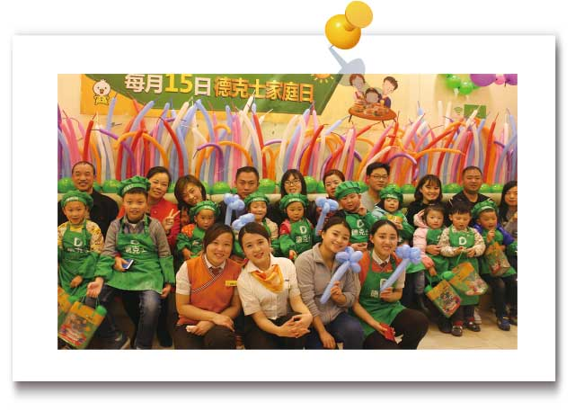
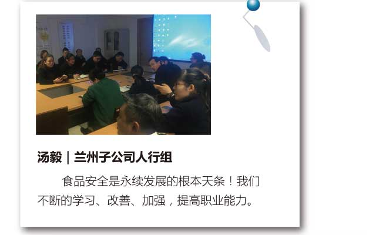
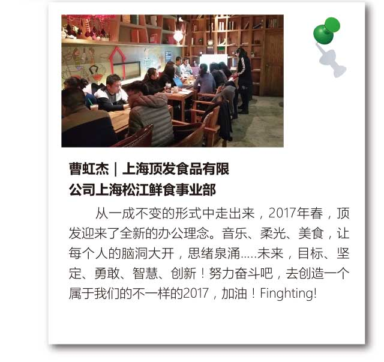
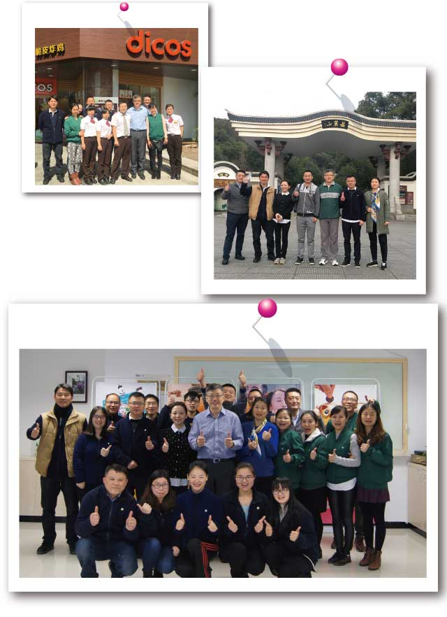
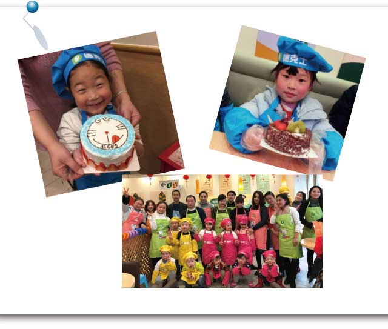

十年前，我的第一份工作就是在德克士。从柜台服务员一直到如今的员创餐厅店长。
2017年3月3日，执行长巡店到长沙高桥餐厅，特意关怀到餐厅员创收益，询问内创一年半的心得与体会，并到收银线体验POS3.0带来的快捷与好处。执行长在后面的交流过程中询问POS3.0有没有问题点，并告诉营运端后续会有订货和排班，为营运省时减力。有如此接地气的大BOSS，我这个入行10年的“老油条”，会愿意去相信这个品牌会越来越好。很庆幸十年前加入的自己，希望未来的日子，我们都要一起努力！
爱要分享才珍贵、孩子们小小的脑袋中随时会迸发无限创意，陪伴是孩子成长过程中最需要的”2月15日贵州德克士举办了今年第一个【家庭日活动】宝宝们和爸爸妈妈一起制作了蛋糕，每个蛋糕都充满了宝宝们的小创意和爸爸妈妈满满的爱^_^
  一年之际在于春，在春暖花开、万物复苏的季节里。
3月1日我们迎来了执行长到两湖餐厅来指导11511落地执行。
11511，已经如雷贯耳，董事长用心良苦地一直给我们讲，执行长用扎根固本、内外兼修来贯彻落地执行。
餐厅的经营，11511的执行，就是2个循环，内部管理的循环和外部顾客满意的循环。执行长特别提出早餐的经营，要持续，早上6点售卖早餐，刚开始的时候，可能没有什么盈利，但是，只有坚持，顾客才会有记忆，竞品的早餐也是坚持下来，才会有顾客的认可，我们餐厅也要坚持把早餐经营好。
执行长还说：“我们餐厅日商要成长10%，执行好11511是根本，我们要执行好11511，我们自己的身体也要跟上，身体是革命的本钱嘛，明天早上，6点30去爬山，锻炼你们的基本功，早上空气好，锻炼下身体，头清目明，思路会更清晰。”
说到做到，第二天早上6点30分，在执行长的带领下，我们团队就开始了登山运动，登山途中，执行长分享心得，平时工作之余，早上要起来锻炼身体，山上空气清新，让人心旷神怡，头脑呼吸够充足的氧气，就能产生很多新的想法，对餐厅的经营管理也是大大有益。
自从德克士举办了家庭日活动以后，小朋友们的课余生活又丰富了许多！２月，重庆50家餐厅共508人参与了家庭日活动。孩子们既能亲手制作汉堡，还学会很多手工制作，重点是可以和爸爸妈妈一起参与活动，做做小游戏，亲手制作好吃的汉堡、美味的蛋糕给爸爸妈妈分享。平日爸爸妈妈忙于工作，交流的机会少之又少，现在德克士建立了这样的一个平台，每个月 2个半小时给孩子带来的是美好的回忆及成长的陪伴！